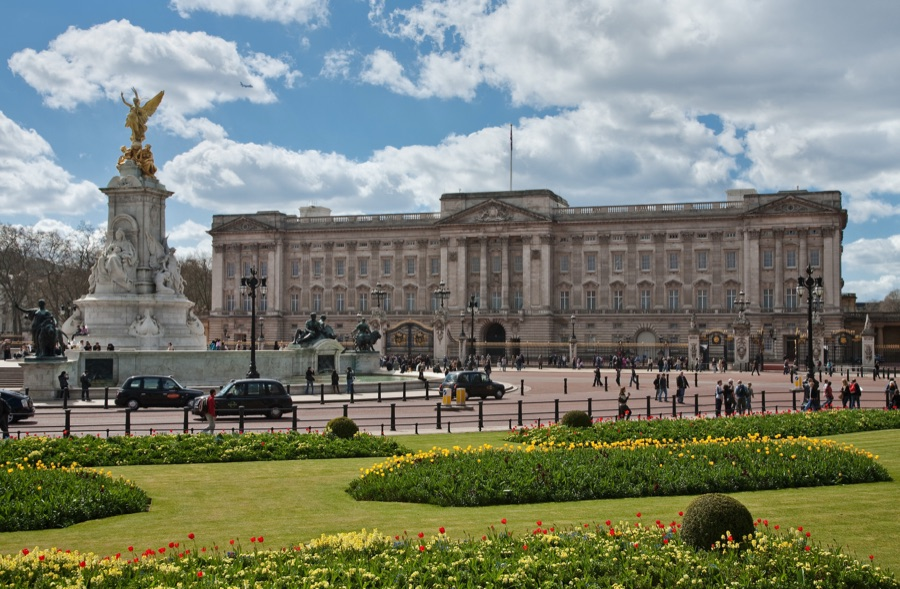
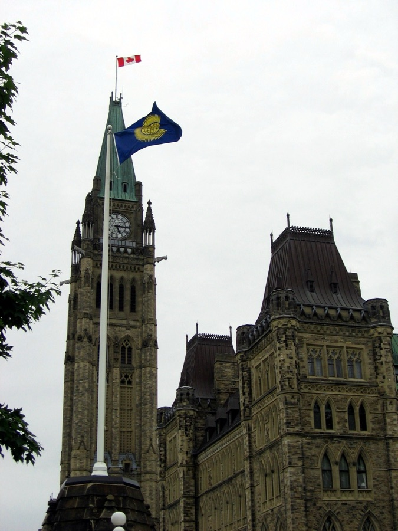
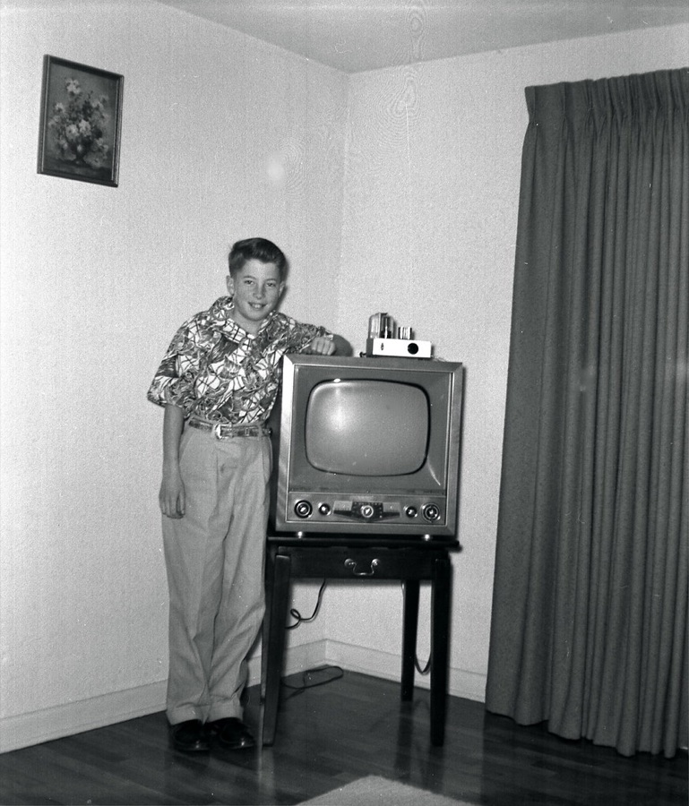
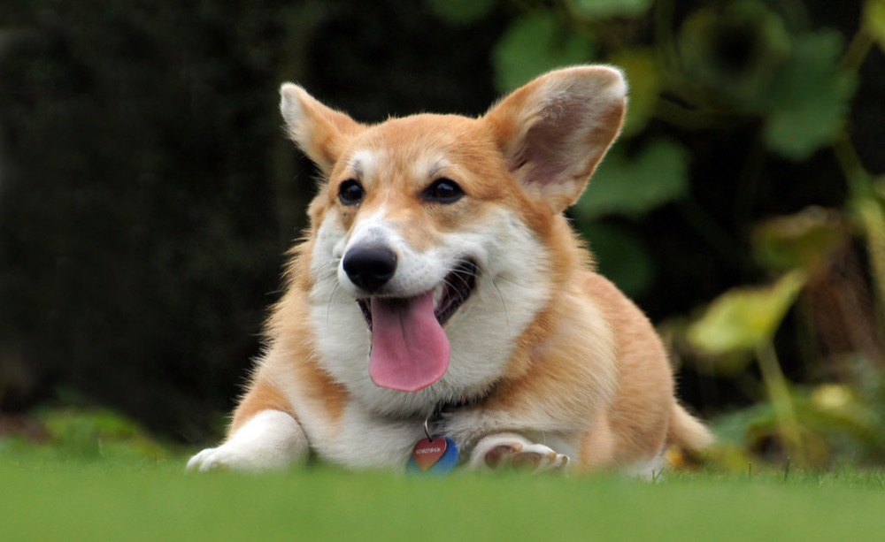

Обо мне
Меня зовут Елизавета Александра Мария. Я родилась 21 апреля 1926 года в Лондоне. И знаете что? Королевой я быть вообще не собиралась. Трон должен был достаться моему дяде, но он отрёкся ради любви (романтик), корона перешла моему отцу, а я из просто принцессы вдруг стала наследницей. Мой главный карьерный взлёт случился, когда я об этом даже не просила. Бывает.
Какая я
Снаружи — улыбчивая невысокая старушка в шляпке кислотного цвета. И цвет не случаен: если ты глава государства, тебя должно быть видно в толпе за километр. «Меня должно быть видно, чтобы в меня поверили» — это не про тщеславие, это про работу.
Внутри за ямочками и вежливой улыбкой прячется женщина, которая правила 70 лет и пересидела на троне даже собственную прапрабабушку Викторию.
За семьдесят лет я не дала ни одного интервью и не сказала лишнего. Молчание тоже стратегия, причём сильно недооценённая.
Я застала чёрно-белое телевидение и смартфоны, отправила свой первый твит уже сильно за восемьдесят и снялась в скетче с Джеймсом Бондом. Не каждая бабушка таким похвастается.
Чем занимаюсь

Люди думают, что королева только перерезает ленточки и машет рукой из кареты. Люди сильно недооценивают объём работы.
Главный актив: бренд «Монархия»
Я унаследовала институт, которому больше тысячи лет, и семьдесят лет держала его на плаву в мире, который менялся быстрее, чем я успевала менять шляпки. Мой продукт — стабильность: пока все вокруг суетятся, ты просто есть.

Содружество наций
56 стран, больше двух миллиардов человек, добровольная глобальная сеть без единого выстрела. Ни один стартап так не масштабировался.

Медиа и связь с аудиторией
Моё рождественское обращение выходит каждый год с 1957-го. Личный прямой канал к подданным без посредников.
Дипломатия и мягкая сила
Государственные визиты, приёмы, рукопожатия с сотнями лидеров. Я пожала руки примерно всем, кто хоть что-то значил в XX веке.
Кризис-менеджмент
Был год, который я сама назвала «annus horribilis». Я прошла через всё, ни разу не повысив голос. Спокойствие как суперспособность.
Ресурсы
Дворцы (Букингемский для работы, Виндзорский для души, Балморал в Шотландии для настоящего отдыха), корона в самом буквальном смысле, конюшня чистокровных скакунов, узнаваемость выше, чем у любого бренда на планете, сумочка Launer и три поколения семьи, которых надо держать в узде. Последнее — самая тяжёлая работа из всех.
Смешные и любопытные факты
Корги, разумеется корги
- За жизнь у меня было больше тридцати корги, почти все — потомки Сьюзан, подаренной мне на 18-летие.
- Я даже вывела новую породу: корги плюс такса — «дорги».
- Мои корги слушались меня, пожалуй, лучше, чем некоторые премьер-министры.
Привычки и характер
- Яркие однотонные цвета — мятный, фуксия, канареечный: чтобы королеву было видно издалека.
- Моя сумочка — пульт управления. Переложила из руки в руку — помощники знают: пора спасать меня от скучного разговора.
- Обожаю лошадей и скачки. На ипподроме кричу совершенно искренне.
- Водила прекрасно, а прав у меня не было — единственному человеку в стране они не нужны.
Неочевидное
- Во Вторую мировую я пошла в армию: чинила грузовики и работала водителем.
- На Олимпиаде-2012 я «прыгнула с парашютом» вместе с Джеймсом Бондом.
- На Платиновом юбилее пила чай с медвежонком Паддингтоном и призналась, что держу в сумочке бутерброд с мармеладом. Мало ли.
- Первое электронное письмо отправила ещё в 1976 году.
Как со мной работать
Я ценю пунктуальность, чувство долга и хорошо воспитанных собак. Не выношу нытьё и суету. Хотите мне угодить — приходите вовремя, погладьте корги и заварите крепкий чай.
